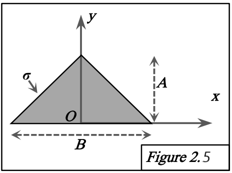

Figure 2.5 : Triangle isocèle

FIGURE 2.5 - Triangle isocèle
Méthode requise : Calcul direct.
Concepts Clés :
- Matrice d'inertie, Corps surfacique ($dm = \sigma dA$).
- Symétrie : Le plan $y=0$ n'est pas un plan de symétrie. L'axe Y (contenu dans $x=0$) est un axe de symétrie matérielle. Donc $D=I_{xy}=0$ et $F=I_{yz}=0$. Le plan $z=0$ contient l'objet, donc $E=I_{xz}=0$. La matrice sera diagonale.
Géométrie et Paramétrisation :
- Triangle isocèle : base sur l'axe X de -B/2 à B/2. Sommet en (0, A, 0). Dimension A=Hauteur, B=Base.
- Masse totale : $M = \sigma \times (\frac{1}{2} B A)$.
- Demi-largeur à la hauteur y : $w(y) = \frac{B}{2}(1 - \frac{y}{A})$.
- Hauteur à l'abscisse x : $h(x) = A(1 - \frac{2|x|}{B})$ pour $x \in [-B/2, B/2]$.
- Élément de masse : $dm = \sigma dx dy$.
Calcul des termes du tenseur :
Méthode 1 : Calcul direct (intégration dx dy)
Calcul de $A_{xx}$ :
$$ A_{xx} = I_{xx} = \iint_S y^2 dm = \sigma \int_0^A \int_{-w(y)}^{w(y)} y^2 dx dy $$
$$ = \sigma \int_0^A y^2 (2w(y)) dy = \sigma B \int_0^A (y^2 - \frac{y^3}{A}) dy $$
$$ = \sigma B \left[ \frac{y^3}{3} - \frac{y^4}{4A} \right]_0^A = \sigma B \frac{A^3}{12} = M \frac{A^2}{6} $$
Calcul de $B_{yy}$ :
$$ B_{yy} = I_{yy} = \iint_S x^2 dm = \sigma \int_0^A \int_{-w(y)}^{w(y)} x^2 dx dy $$
$$ = \sigma \int_0^A \frac{2(w(y))^3}{3} dy = \frac{2\sigma}{3} \frac{B^3}{8} \int_0^A (1 - \frac{y}{A})^3 dy $$
Posons $u = 1 - y/A$, $du = -dy/A$.
$$ B_{yy} = \frac{\sigma B^3}{12} \int_1^0 u^3 (-A du) = \frac{\sigma A B^3}{12} \int_0^1 u^3 du = \frac{\sigma A B^3}{48} = M \frac{B^2}{24} $$
Calcul de $C_{zz}$, D, E, F :
$ C_{zz} = A_{xx} + B_{yy} = M \left( \frac{A^2}{6} + \frac{B^2}{24} \right) $. $D=0$. $E=F=0$.
Méthode 2 : Intégration par bandes horizontales
Bande à la hauteur $y$, épaisseur $dy$, largeur $L(y)=2w(y)=B(1-y/A)$, masse $dm = \sigma L(y) dy$.
Calcul de $A_{xx}$ :
$dA_{xx} = y^2 dm$.
$$ A_{xx} = \int_0^A y^2 dm = \int_0^A y^2 \sigma B(1 - y/A) dy = \sigma B \frac{A^3}{12} = M \frac{A^2}{6} $$
Calcul de $B_{yy}$ :
Moment d'inertie de la bande (tige) autour de l'axe Y (son centre) : $dB_{yy} = \frac{1}{12} dm (L(y))^2$.
$$ B_{yy} = \int_0^A dB_{yy} = \int_0^A \frac{1}{12} (\sigma B(1 - y/A) dy) (B(1 - y/A))^2 = \frac{\sigma B^3}{12} \int_0^A (1 - y/A)^3 dy $$
$$ = \frac{\sigma A B^3}{12} \int_0^1 u^3 du = \frac{\sigma A B^3}{48} = M \frac{B^2}{24} $$
Calcul de $C_{zz}$, D, E, F :
$ C_{zz} = A_{xx} + B_{yy} = M(A^2/6 + B^2/24) $. $D=0$ (symétrie). $E=F=0$.
Méthode 3 : Intégration par bandes verticales
Bande verticale à l'abscisse $x$, épaisseur $dx$, hauteur $h(x)=A(1 - 2|x|/B)$, masse $dm = \sigma h(x) dx$.
Calcul de $B_{yy}$ :
$dB_{yy} = x^2 dm$.
$$ B_{yy} = \int_{-B/2}^{B/2} x^2 dm = \int_{-B/2}^{B/2} x^2 (\sigma A(1 - 2|x|/B) dx) $$
Intégrand pair :
$$ B_{yy} = 2 \sigma A \int_0^{B/2} x^2 (1 - 2x/B) dx = 2 \sigma A \int_0^{B/2} (x^2 - 2x^3/B) dx $$
$$ = 2 \sigma A \left[ \frac{x^3}{3} - \frac{x^4}{2B} \right]_0^{B/2} = 2 \sigma A \left( \frac{B^3}{24} - \frac{B^3}{32} \right) = \frac{\sigma A B^3}{48} = M \frac{B^2}{24} $$
Calcul de $A_{xx}$ :
Moment d'inertie de la bande (tige) par rapport à l'axe Ox (son extrémité basse) : $dA_{xx} = \frac{1}{3} dm (h(x))^2$.
$$ A_{xx} = \int_{-B/2}^{B/2} dA_{xx} = \int_{-B/2}^{B/2} \frac{1}{3} (\sigma A(1 - 2|x|/B) dx) (A(1 - 2|x|/B))^2 $$
$$ = \int_{-B/2}^{B/2} \frac{\sigma A^3}{3} (1 - 2|x|/B)^3 dx $$
Intégrand pair :
$$ A_{xx} = \frac{2 \sigma A^3}{3} \int_0^{B/2} (1 - 2x/B)^3 dx $$
Posons $v = 1 - 2x/B$, $dx = -B dv/2$.
$$ A_{xx} = \frac{2 \sigma A^3}{3} \int_1^0 v^3 (-B dv/2) = \frac{\sigma A^3 B}{3} \int_0^1 v^3 dv $$
$$ = \frac{\sigma A^3 B}{3} \left[ \frac{v^4}{4} \right]_0^1 = \frac{\sigma A^3 B}{12} = M \frac{A^2}{6} $$
Calcul de $C_{zz}$, D, E, F :
$ C_{zz} = A_{xx} + B_{yy} = M(A^2/6 + B^2/24) $. $D=0$ (symétrie). $E=F=0$.
Résultat :
Le tenseur d'inertie au point O est :
$$ [I_O]_{2.5} = \begin{pmatrix} A_{xx} & -D & -E \\ -D & B_{yy} & -F \\ -E & -F & C_{zz} \end{pmatrix} = \begin{pmatrix} M A^2/6 & 0 & 0 \\ 0 & M B^2/24 & 0 \\ 0 & 0 & M(A^2/6 + B^2/24) \end{pmatrix} $$
où $M = \frac{1}{2} \sigma B A$.
Commentaire :
La matrice est diagonale, comme attendu par la symétrie par rapport à l'axe Y et la nature planaire. Les trois méthodes de calcul direct donnent le même résultat.